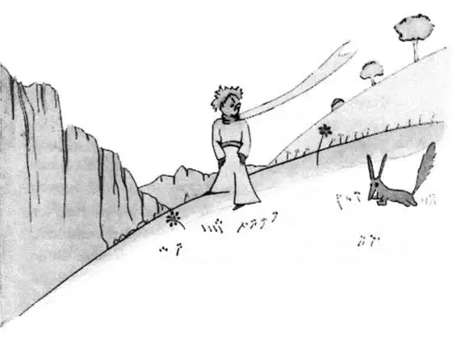
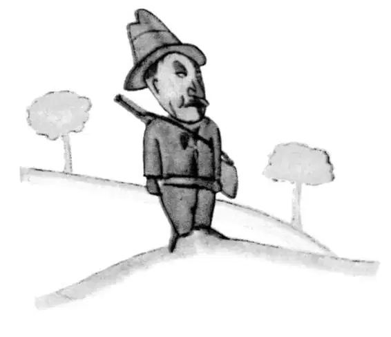
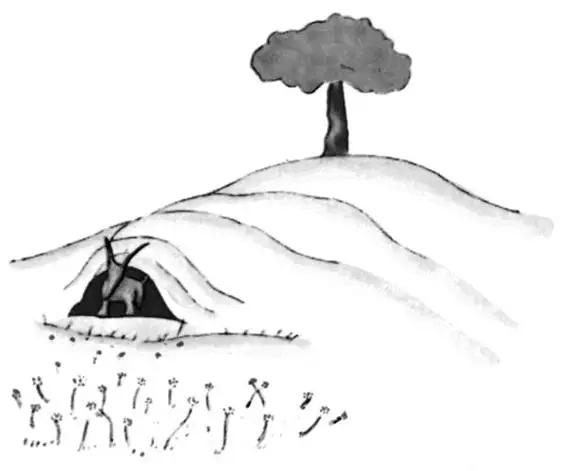

CHAPTER 21
第二十一章
—the little prince befriends the fox
——小王子与狐狸交朋友
It was then that the fox appeared.
就在此时，狐狸出现了。
"Good morning," said the fox.
“早上好啊。”狐狸说。
"Good morning," the little prince responded politely, although when he turned around he saw nothing.
“早上好。”小王子礼貌地回答，尽管他转过身来什么也没看到。
"I am right here," the voice said, "under the apple tree."
“我在这里，”那个声音说，“在苹果树下。”
"Who are you?" asked the little prince, and added, "You are very pretty to look at."
“你是谁？”小王子问道，接着又说，“你看起来很漂亮。”
"I am a fox," said the fox.
“我是一只狐狸。”狐狸说。
"Come and play with me," proposed the little prince. "I am so unhappy."
“过来和我一起玩吧。”小王子请求说，“我很不开心。”
"I cannot play with you," the fox said. "I am not tamed."
“我不能和你玩。”狐狸说，“我没有被驯服。”
"Ah! Please excuse me," said the little prince.
“啊！请原谅我。”小王子说。
But, after some thought, he added:
可是想了一会，他又说：
"What does that mean—'tame'?"
“你说‘驯服’是什么意思啊？”
"You do not live here," said the fox. "What is it that you are looking for?"
“你不是住在这里的。”狐狸说，“你在找什么东西呢？”

"I am looking for men," said the little prince. "What does that mean—'tame'?"
“我在找人。”小王子说。“‘驯服’——是什么意思啊？”
"Men," said the fox. "They have guns, and they hunt. It is very disturbing. They also raise chickens. These are their only interests. Are you looking for chickens?"
“人啊，”狐狸说，“他们有枪，他们狩猎。非常让人不安。他们还养鸡。这些是他们唯一的兴趣。你在找鸡吗？”
"No," said the little prince. "I am looking for friends. What does that mean—'tame'?"
“不。”小王子说。“我在找朋友。‘驯服’——是什么意思啊？”
"It is an act too often neglected," said the fox. "It means to establish ties."
“是常常被忽视的一种行为，”狐狸说，“意思是建立纽带。”
“'To establish ties'?"
“‘建立纽带’?"
"Just that," said the fox. "To me, you are still nothing more than a little boy who is just like a hundred thousand other little boys. And I have no need of you. And you, on your part, have no need of me. To you, I am nothing more than a fox like a hundred thousand other foxes. But if you tame me, then we shall need each other. To me, you will be unique in all the world. To you, I shall be unique in all the world..."
“就是那样。”狐狸说，“对我来说，你只不过是一个小男孩，就像其他千千万万个小男孩一样。我不需要你。而你，在你看来，也不需要我。对你而言，我不过是一只狐狸，和其他千千万万只狐狸一样。可如果你驯服了我，那么，我们就会彼此需要。在我眼里，全世界只有你是独一无二的。而在你眼里，全世界也只有我是独一无二的……”
"I am beginning to understand," said the little prince. "There is a flower... I think that she has tamed me..."
“我开始懂了。”小王子说。“有一朵花……我想她已经驯服了我……”
"It is possible," said the fox. "On the Earth one sees all sorts of things."
“很有可能。”狐狸说，“在地球上，你可以碰到各种各样的事情。”
"Oh, but this is not on the Earth!" said the little prince.
“噢，可这不是在地球上发生的！”小王子说。
The fox seemed perplexed, and very curious.
狐狸看上去有些困惑，又非常好奇。
"On another planet?"
“在另一个星球上？”
"Yes."
“是的。”
"Are there hunters on this planet?"
“在那个星球上有猎人吗？”
"No."
“没有。”

"Ah, that is interesting! Are there chickens?"
“啊，那可真有意思！有鸡吗？”
"No."
“没有。”
"Nothing is perfect," sighed the fox.
“没有十全十美的事情。”狐狸感叹说。
But he came back to his idea.
但他又回到自己的话题上来。
"My life is very monotonous," the fox said. "I hunt chickens; men hunt me. All the chickens are just alike, and all the men are just alike. And, in consequence, I am a little bored. But if you tame me, it will be as if the sun came to shine on my life. I shall know the sound of a step that will be different from all the others. Other steps send me hurrying back underneath the ground. Yours will call me, like music, out of my burrow. And then look: you see the grain-fields down yonder? I do not eat bread. Wheat is of no use to me. The wheat fields have nothing to say to me. And that is sad. But you have hair that is the colour of gold. Think how wonderful that will be when you have tamed me! The grain, which is also golden, will bring me back the thought of you. And I shall love to listen to the wind in the wheat...”
“我的生活非常单调。”狐狸说，“我抓鸡；人抓我。所有的鸡都一样，所有的人也一样。结果，我感到有点无聊。可如果你驯服了我，那就好比是太阳又重新照亮我的生活。我会知道有个脚步声和其他所有的都不同。其他的脚步声会让我赶快躲进地下。而你的则会像音乐一样呼唤我出洞。还有，你瞧：看到那边的谷地没有？我不吃面包。小麦对我毫无用处。我对麦田一点儿也不感兴趣。真让人悲哀。可你却有一头金色的头发。想想，你若驯服了我，那会有多美妙！谷子与你的头发一样，都是金色。它会让我想起你。我会爱上在麦田里听风的声音……”
The fox gazed at the little prince, for a long time.
狐狸注视着小王子，就这样过了很久。
"Please—tame me!" he said.
他说：“请——驯服我吧！”
"I want to, very much," the little prince replied. "But I have not much time. I have friends to discover, and a great many things to understand."
“我也想，非常想。”小王子回答说。“可是我没有很多时间。我要去结识朋友，还有很多很多事情要了解。”
"One only understands the things that one tames," said the fox. "Men have no more time to understand anything. They buy things all ready made at the shops. But there is no shop anywhere where one can buy friendship, and so men have no friends any more. If you want a friend, tame me..."
“一个人只需要了解他要驯服的东西就够了。”狐狸说，“人没有时间了解一切。他们只在商店里买现成的。可他们却找不到一个出售友谊的商店，所以人没有什么朋友。如果你想要一个朋友，就驯服我吧……”
"What must I do, to tame you?" asked the little prince.
“要驯服你，我该怎么做呢？”小王子问。
"You must be very patient," replied the fox. "First you will sit down at a little distance from me—like that—in the grass. I shall look at you out of the corner of my eye, and you will say nothing. Words are the source of misunderstandings. But you will sit a little closer to me, every day...”
“你必须非常耐心。”狐狸答道，“首先，你在离我稍远一点的地方坐下来——就像那样——坐在草丛里。我会用眼角瞅瞅你，而你什么都不要说。语言是让人产生误解的根源。可每一天，你都要靠近我一点……”
The next day the little prince came back.
第二天，小王子回到这里。

"It would have been better to come back at the same hour," said the fox. "If, for example, you come at four o'clock in the afternoon, then at three o'clock I shall begin to be happy. I shall feel happier and happier as the hour advances. At four o'clock, I shall already be worrying and jumping about. I shall show you how happy I am! But if you come at just any time, I shall never know at what hour my heart is to be ready to greet you... One must observe the proper rites..."
“最好在同一时间回来。”狐狸说，“比方说，如果你下午四点钟来，那么，到三点的时候我就开始觉得很开心。随着时间一点点地向前推进，我会越来越开心。到了四点，我又会焦虑得跳起来。我会让你看到我有多么开心！可如果你随便什么时候来，我就不知道什么时候准备迎接你的到来……人应该遵守正确的仪式……”
"What is a rite?" asked the little prince.
“什么是仪式？”小王子问。
"Those also are actions too often neglected," said the fox. "They are what make one day different from other days, one hour from other hours. There is a rite, for example, among my hunters. Every Thursday they dance with the village girls. So Thursday is a wonderful day for me! I can take a walk as far as the vineyards. But if the hunters danced at just any time, every day would be like every other day, and I should never have any vacation at all."
“那也是常被忽略的行为。”狐狸说，“它们就是让一天或者一个时刻与众不同的东西。比如，猎人们有一种仪式。每个星期四，他们和村里的女孩跳舞。所以星期四对我来说棒极了！我可以一直散步到葡萄园里去。可如果猎人随便什么时候都跳舞，天天都一样的话，那么我就根本没有什么假期而言了。”
So the little prince tamed the fox. And when the hour of his departure drew near—
于是，小王子驯服了狐狸。当他离去的时刻临近时——
"Ah," said the fox, "I shall cry."
“啊，”狐狸说，“我快要哭了。”
"It is your own fault," said the little prince. "I never wished you any sort of harm; but you wanted me to tame you..."
“那是你自己的错。”小王子说。“我从来不想给你任何伤害；是你要我驯服你的……”
"Yes, that is so," said the fox.
“对，是这样，没错。”狐狸说。
"But now you are going to cry!" said the little prince.
“可现在你又要哭！”小王子说。
"Yes, that is so," said the fox.
“是的，没错。”狐狸说。
"Then it has done you no good at all!"
“所以这对你没一丁点好处！”
"It has done me good," said the fox, "because of the color of the wheat fields." And then he added:
“对我有好处。”狐狸说，“因为麦田的颜色。”于是他接着说：
"Go and look again at the roses. You will understand now that yours is unique in all the world. Then come back to say goodbye to me, and I will make you a present of a secret."
“再去看看玫瑰吧。你现在会明白全世界只有你那朵玫瑰是独一无二的。然后再回来跟我说再见，我会告诉你一个秘密，作为送你的礼物。”
The little prince went away, to look again at the roses.
于是小王子又去看了看玫瑰。
"You are not at all like my rose," he said. "As yet you are nothing. No one has tamed you, and you have tamed no one. You are like my fox when I first knew him. He was only a fox like a hundred thousand other foxes. But I have made him my friend, and now he is unique in all the world."
“你们根本不像我的玫瑰，”他说，“至今为止，你们什么都不是。没人驯服你们，而你们也没有驯服任何人。你们就像我刚认识我那只狐狸时一样。他只是一只狐狸，和其他千千万万的狐狸没有什么区别。可我把他变成了我的朋友，现在他是全世界独一无二的了。”
And the roses were very much embarrassed.
玫瑰们都非常地尴尬。
"You are beautiful, but you are empty," he went on. "One could not die for you. To be sure, an ordinary passerby would think that my rose looked just like you—the rose that belongs to me. But in herself alone she is more important than all the hundreds of you other roses: because it is she that I have watered; because it is she that I have put under the glass globe; because it is she that I have sheltered behind the screen; because it is for her that I have killed the caterpillars (except the two or three that we saved to become butterflies); because it is she that I have listened to, when she grumbled, or boasted, or even sometimes when she said nothing. Because she is my rose.”
“你们很美，却很空虚。”他继续说道，“没有谁会为你们而死。毫无疑问，一个普通的路人会认为我拥有的那只玫瑰和你们无异。可是只她一朵，却比你们这成百上千朵玫瑰都重要：因为我浇灌的是她；因为我放在玻璃罩下的是她；因为我用屏风为之遮风挡雨的是她；因为她，我杀死毛毛虫（除了我们刻意留下来的两三只，好让它们变成蝴蝶）；因为我倾听的是她，不论她是发牢骚，还是炫耀，抑或是什么都不说。因为她是我的玫瑰。”
And he went back to meet the fox.
然后他回来见狐狸。
"Goodbye," he said.
“再见。”他说。
"Goodbye," said the fox. "And now here is my secret, a very simple secret: It is only with the heart that one can see rightly; what is essential is invisible to the eye.”
“再见。”狐狸说，“现在告诉你我的秘密，一个非常简单的秘密：只有用心才能看得清；本质的东西，眼睛是看不见的。”
"What is essential is invisible to the eye," the little prince repeated, so that he would be sure to remember.
“本质的东西，眼睛是看不见的。”小王子重复道，好让自己牢牢地记住。
"It is the time you have wasted for your rose that makes your rose so important."
“正是因为你在你的玫瑰上花了时间，才使你的玫瑰变得如此重要。”
"It is the time I have wasted for my rose—” said the little prince, so that he would be sure to remember.
“正是因为我在我的玫瑰上花了时间——”小王子说，好让自己牢牢地记住。
"Men have forgotten this truth," said the fox. "But you must not forget it. You become responsible, forever, for what you have tamed. You are responsible for your rose..."
“人类已经忘记了这个事实。”狐狸说，“但是你一点不要忘记。你要永远对你已驯服的一切承担起责任。你要为你的玫瑰负责……”
"I am responsible for my rose," the little prince repeated, so that he would be sure to remember.
“我要为我的玫瑰负责。”小王子重复说，好让自己牢牢地记住。